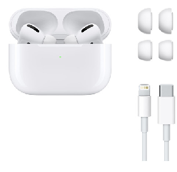

Airpods

información:
Sensores
Dos micrófonos con tecnología beamforming
Dos sensores ópticos
Acelerómetro con detección de movimiento
Acelerómetro con detección de voz
Chip
Chip H1 para audífonos
Controles
Presiona dos veces para reproducir, avanzar o contestar una llamada
Di “Oye Siri” para escuchar música, hacer una llamada u obtener indicaciones para llegar a un lugar
Tamaño y peso (cada uno)1
16.5 mm
40.5 mm
Alto: 40.5 mm
Ancho: 16.5 mm
Grosor: 18 mm
Peso: 4 g
44.3 mm
53.5 mm
21.3 mm
Alto: 53.5 mm
Ancho: 44.3 mm
Grosor: 21.3 mm
Peso: 38.2 g
Estuche de carga
Funciona con el conector Lightning
Batería
AirPods
Hasta 5 horas de audio con una sola carga2
Hasta 3 horas de conversación con una sola carga3
AirPods con estuche de carga Lightning
Más de 24 horas de audio4
Hasta 18 horas de conversación5
15 minutos en el estuche te dan hasta 3 horas de audio6 o hasta 2 horas de conversación7
Conectividad
Tecnología inalámbrica Bluetooth 5.0
En la caja
AirPods
Estuche de carga Lightning
Cable de Lightning a USB-A
Documentación
Accesibilidad
Las funcionalidades de accesibilidad ayudan a las personas con alguna discapacidad a aprovechar al máximo sus nuevos AirPods. Funcionalidades incluidas:
Funcionalidad de audio Escucha en Vivo8
Niveles de los audífonos
Adaptaciones de Audífonos
Requisitos del sistema9
Modelos de iPhone y iPod touch con la última versión de iOS
Modelos de iPad con la última versión de iPadOS
Modelos de Apple Watch con la última versión de watchOS
Modelos de Mac con la última versión de macOS
Modelos de Apple TV con la última versión de tvOS
Comprar